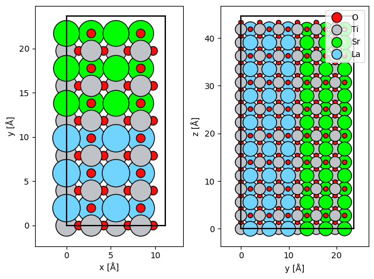
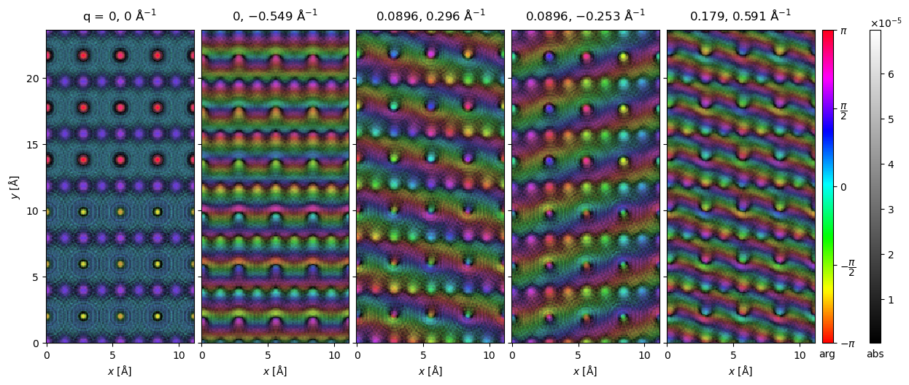
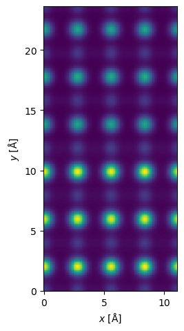
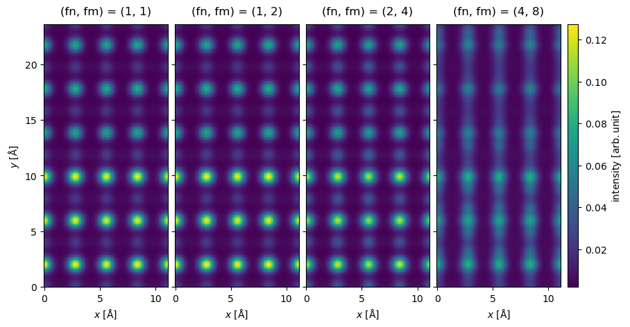
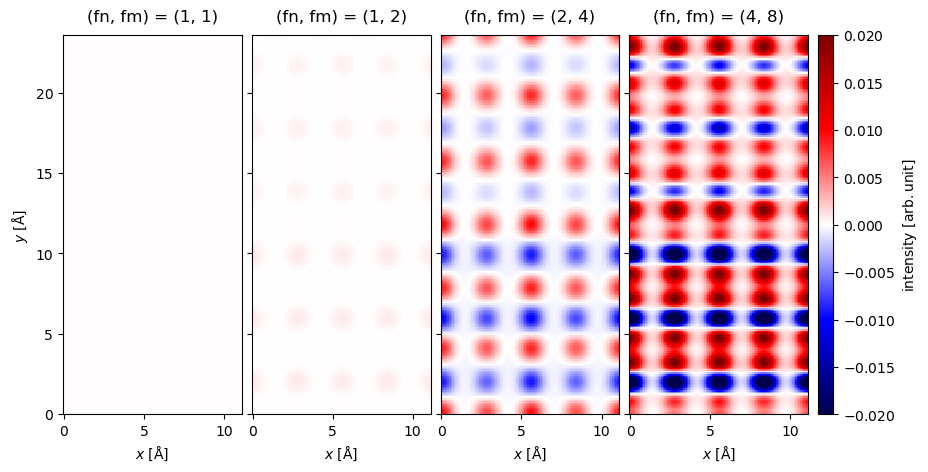
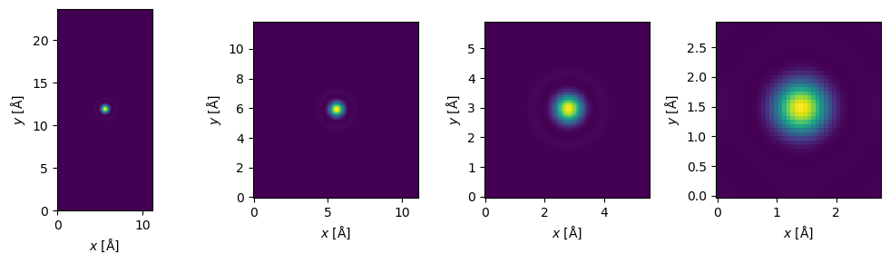
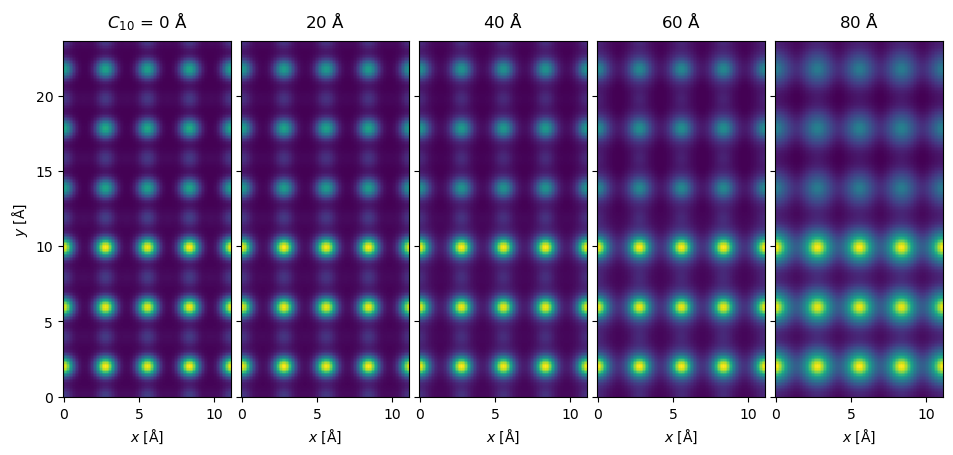

PRISM#
Multslice simulations of STEM images is computationally expensive because the exit wave function has to be calculated from scratch at each probe position. abTEM uses parallization to mitigate this, but an alternative that does not require more hardware is to use the PRISM algorithm [Oph17]. At no cost to accuracy, PRISM almost always speeds up simulations of images with many probe positions. By introducing approximations in the form of Fourier space interpolation, PRISM can reach speedups of several 100x at a minor cost to the accuracy.
Note
Very large speedups from PRISM are only achievable for large simulations, and as we want to keep the calculation time this tutorial fairly small, we do not reach those speedups here.
See also
Our PRISM quickstart example provides a basic template for doing STEM simulations with PRISM in abTEM.
The PRISM scattering matrix#
We derive the PRISM algorithm from the perspective of writing the (discretized) probe wave function as an expansion of plane waves.
where
is a plane wave with a wave vector \(\vec{q}_{nm}\) that (due to discretization) must fulfill
where \(\Delta q\) is the Fourier space sampling rate. The complex expansion coefficients \(C_{nm}\) may be chosen to select a specified probe position and/or phase error. Since the Fourier space probe wave function is zero beyond the convergence semi-angle, we may limit the number of terms in the expansion by the semiangle cutoff \(\alpha_{cut}\). Thus only the terms fulfilling
needs to be included in the expansion.
We use the symbol \(\mathcal{M}\) to represent the application of the multislice algorithm to a wave function (see Eq. eq{eq:multislice_symbol} in our walkthrough on the multislice algorithm), thus the exit wave is given by
where the second equality just uses that the multislice operator is linear (following from the linearity of convolutions).
The PRISM algorithm for STEM simulations may be summarised as two consecutive stages:
Multislice stage: Build the PRISM scattering matrix by applying the multislice algorithm to each plane wave in the expansion, i.e. calculate the set of waves \(\mathcal{M} S_{nm}\).
Reduction stage: For each probe position, perform the reduction in Eq. (9) with a set of expansion coefficients determined by the probe position and phase aberrations.
The SMatrix#
We import the atomic model of the SrTiO3/LaTiO3 interface created here and make a Potential.
atoms = read("./data/STO_LTO.cif")
atoms = atoms * (1, 1, 2)
potential = abtem.Potential(atoms, gpts=(512, 512))
fig, (ax1, ax2) = plt.subplots(1, 2)
abtem.show_atoms(atoms, ax=ax1)
abtem.show_atoms(atoms, legend=True, ax=ax2, plane="yz")
plt.tight_layout()

In abTEM, the PRISM scattering matrix (i.e. the set of waves \(\mathcal{M} S_{nm}\)) is represented by the SMatrix. The expansion cutoff angle, \(\alpha_{max}\), is given as semiangle_cutoff. In addition to \(\alpha_{max}\), the number of plane wave in the expansion increases with the energy and the extent of the potential, because they, respectively, decrease \(\lambda\) and \(\Delta_q\) in Eq. (8).
We create an SMatrix representing the SrTiO3/LaTiO3 model for an energy of \(150 \ \mathrm{keV}\) and an expansion cutoff angle of \(20 \ \mathrm{mrad}\).
s_matrix = abtem.SMatrix(
potential=potential,
energy=150e3,
semiangle_cutoff=20,
)
We can build the SMatrix to produce an SMatrixArray. The SMatrixArray wraps a 3d numpy array where the first dimension indexes \(S_{nm}\) (running over both indices \(n\) and \(m\)), the last two dimensions represents the \(x\) and \(y\) axis of the waves.
We see that the expansion of our probe requires 425 plane waves.
s_matrix_array = s_matrix.build()
s_matrix_array.compute();
Note
The number of grid points of the waves is smaller than the Potential by a factor of \(2 / 3\). This is because the array representing the PRISM S-Matrix is downsampled to the angle of the anti-aliasing aperture after the multislice stage. This is done to save memory, but can be disabled by setting downsample=False when creating the SMatrix.
We calculate and show a small selection of the expansion wave functions (\(\mathcal{M} S_{nm}\)) below. The first panel is the \(S_{00}\) plane wave, the additional panels shows
waves = s_matrix_array.waves[:100:20].compute();
visualization = waves.to_images().show(
explode=True, figsize=(16, 5), cmap="hsv", cbar=True, common_color_scale=True
);

The number of plane waves should be compared to the number of probe positions required to scan over the extent of the potential at Nyquist sampling.
sampling = abtem.transfer.nyquist_sampling(s_matrix.semiangle_cutoff, s_matrix.energy)
scan = abtem.GridScan(
start=(0, 0),
end=(1, 1),
fractional=True,
potential=potential,
sampling=sampling,
)
print(f"Number of probe positions: {len(scan)}")
print(f"Number of plane waves: {len(s_matrix)}")
print(f"Ratio: {len(scan) / len(s_matrix):.1f}")
Number of probe positions: 2015
Number of plane waves: 425
Ratio: 4.7
Thus, PRISM (without approximations) requires 4.7 times fewer multislice steps than the conventional multislice algorithm.
This factor is an upper bound on possible speedup as PRISM also requires the reduction stage. To perform the reduction we call scan with the GridScan defined above and an AnnularDetector to detect the exit waves as the expansion is reduced with varying C_{nm}.
We also call compute which in this case will compute the full task graph of both the multislice and reduction stage.
detector = abtem.AnnularDetector(inner=50, outer=150)
measurement = s_matrix.scan(scan=scan, detectors=detector).compute();
We can now show the resulting HAADF image, as usual we interpolate it to our desired ressolution and apply a gaussian filter to simulate spatial incoherence.
interpolated_measurement = measurement.interpolate(0.1).gaussian_filter(0.3)
interpolated_measurement.show();

The reduction stage is typically significantly faster than the multislice stage, however, this depends completely on the number of slices in the potential. Using PRISM the present example took about 1 min 30s on a mid-range laptop, while the equivalent conventional multislice algorithm took 6 min, hence the actual speedup from using PRISM was about a factor of 4.
PRISM interpolation#
The real speedup with PRISM comes when introducing interpolation. Choosing the interpolation factors \((f_n, f_m)\) the wave vectors should fulfill
hence we keep only every \(f_n\)’th and \(f_m\)’th wave vector. For example, for \((f_n, f_m) = (2, 1)\) we keep only every second wave vector, skipping every second of the \(n\)-indices. The total number of wave vectors is thus reduced by a factor \(f_nf_m\).
We create the same SMatrix as we did in the preceding section, however, we create it with three different interpolation factors \((2, 1)\), \((4, 2)\) and \((8, 4)\).
s_matrix_interpolated = abtem.SMatrix(
potential=potential,
energy=150e3,
semiangle_cutoff=20,
interpolation=(1, 2),
)
s_matrix_more_interpolated = abtem.SMatrix(
potential=potential,
energy=150e3,
semiangle_cutoff=20,
interpolation=(2, 4),
)
s_matrix_very_interpolated = abtem.SMatrix(
potential=potential,
energy=150e3,
semiangle_cutoff=20,
interpolation=(4, 8),
)
We run the PRISM algorithm with each of the interpolated scattering matrices.
measurement_interpolated = s_matrix_interpolated.scan(
scan=scan,
detectors=detector,
).compute();
measurement_more_interpolated = s_matrix_more_interpolated.scan(
scan=scan,
detectors=detector,
).compute();
measurement_very_interpolated = s_matrix_very_interpolated.scan(
scan=scan,
detectors=detector,
).compute();
We show a comparison of the results below. At a glance, we see that the results look identical up to and including an interpolation factor of \((2,4)\), however, at an interpolation factor of \((4, 8)\) visible errors are introduced.
interpolated_measurements = (
abtem.stack(
[
measurement,
measurement_interpolated,
measurement_more_interpolated,
measurement_very_interpolated,
],
(
"(fn, fm) = (1, 1)",
"(fn, fm) = (1, 2)",
"(fn, fm) = (2, 4)",
"(fn, fm) = (4, 8)",
),
)
.interpolate(0.1)
.gaussian_filter(0.3)
)
interpolated_measurements.show(
explode=True,
figsize=(10, 6),
common_color_scale=True,
cbar=True,
);

A quantitative comparison is shown below as the difference between the exact and interpolated as a percent of the maximum value. We see that the error is within a few percent for the interpolation factors \((1,2)\) and \((2,4)\), which is probably within the range of other errors sources. The error of beyond \(10\ \%\) for the interpolation factor of \((4,8)\) is clearly too large.
errors = abtem.stack(
[
interpolated_measurements[0] - interpolated_measurement,
interpolated_measurements[1] - interpolated_measurement,
interpolated_measurements[2] - interpolated_measurement,
interpolated_measurements[3] - interpolated_measurement,
],
(
"(fn, fm) = (1, 1)",
"(fn, fm) = (1, 2)",
"(fn, fm) = (2, 4)",
"(fn, fm) = (4, 8)",
),
)
visualization = (
errors.gaussian_filter(0.3)
.interpolate(0.1)
.show(
explode=True,
figsize=(10, 6),
common_color_scale=True,
cbar=True,
cmap="seismic",
vmin=-0.02,
vmax=0.02,
)
);

In the above we interpolated by twice the factor in \(y\) compared to \(x\). Interpolation effectively repeats the probe, hence the “window” that the repeated probes shrinks as interpolation increases. Hence when the potential extent is larger, we can interpolate by a larger factor before the probes starts to get squeezed.
Choosing the interpolation#
Choosing an appropriate interpolation factor can assisted
fig, (ax1, ax2, ax3, ax4) = plt.subplots(1, 4, figsize=(10, 3))
s_matrix.dummy_probes().show(ax=ax1)
s_matrix_interpolated.dummy_probes().show(ax=ax2)
s_matrix_more_interpolated.dummy_probes().show(ax=ax3)
s_matrix_very_interpolated.dummy_probes().show(ax=ax4)
plt.tight_layout();

PRISM with phase aberrations#
Aberrations can be included by providing a contrast transfer function. An additional advantage of the PRISM algorithm is that including different aberrations does not require redoing the multislice step
defocus = -np.linspace(0, 80, 5)
ctf = abtem.CTF(defocus=defocus)
measurement_with_aberrations = s_matrix_interpolated.scan(
scan=scan, detectors=detector, ctf=ctf
).compute();
measurement_with_aberrations = measurement_with_aberrations.interpolate(0.1).gaussian_filter(0.3).compute();
measurement_with_aberrations.show(
explode=True,
figsize=(10, 6),
);

Memory issues#
See also
See our general introduction to parallelization in abTEM.
The downside to PRISM is often an increased memory requirement which can sometimes be an issue. If you are running out memory, you should first check whether you can increase the interpolation factor or otherwise optimize the simulation parameters. Next, follow some of our general tips on performance, such as decreasing the number of workers. Finally, you can try to specify batch sizes manually, there
max_batch_multislice: Number of expansion plane waves in each run of the multislice algorithmmax_batch_reduction: Number of probe positions per reduction operation
As an example, we setup a simulation with \(20\) plane waves per multislice run and \(200\) probe positions per reduction.
measurement = s_matrix.scan(
scan=scan, detectors=detector, max_batch_multislice = 20, max_batch_reduction = 200
)
GPU calculations requires additional considerations due to the limited memory of the devices. We can mitigate this by storing the SMatrix in host memory and only stream the necessary part to GPU, this is enabled by setting store_on_host=True on creating the SMatrix. You chould